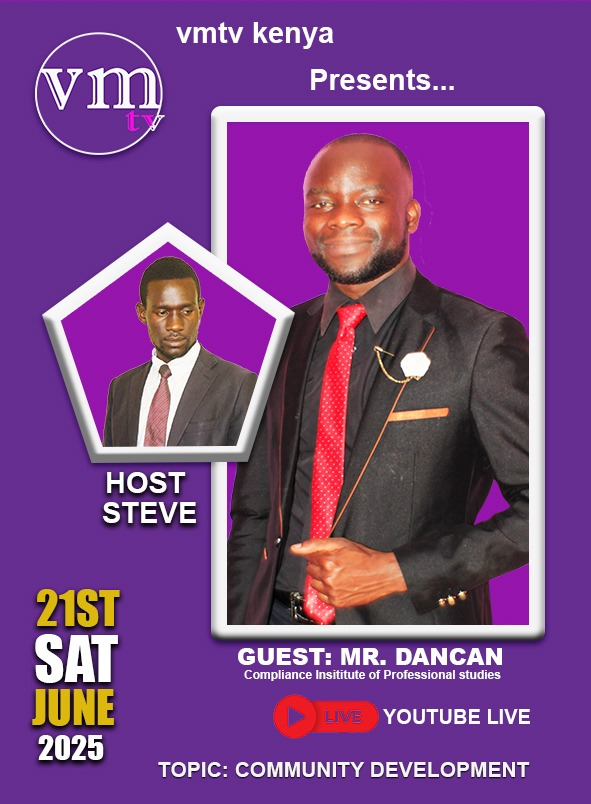

Community Development Practitioner | Dean of Students & Lecturer
I am Duncan Simiyu Barasa, a passionate Community Development Practitioner, Educator, Researcher, and Poet committed to driving sustainable social impact across Kenya and beyond.
Get in TouchI am a dynamic and results-driven Community Development Practitioner dedicated to empowering individuals and communities through innovative solutions, mentorship, and education. With a passion for driving social impact, I have consistently demonstrated strong leadership, strategic thinking, and a commitment to lifelong learning.
I hold a Bachelor of Arts in Community Development from Lukenya University, where I gained extensive knowledge in social research, project management, and participatory approaches to development. Currently, I serve as the Dean of Students at the Compliance Institute of Professional Studies, where I oversee student affairs, promote academic excellence, and foster a supportive learning environment.
As a Lecturer, I teach a diverse range of courses including Web Design, ICT, Customer Service, Communication Skills, Entrepreneurship, and Community Development. My teaching philosophy is grounded in practical engagement, creativity, and capacity building to prepare students for success in both professional and community contexts.
Beyond academia, I am a passionate poet and author with over 300 original poems addressing themes such as peacebuilding, mental health awareness, personal growth, and empowerment. My literary work serves as a platform to inspire reflection, dialogue, and positive action.
I have also mentored numerous youth and professionals, facilitated workshops, and contributed to initiatives focused on environmental sustainability, mental health, and social inclusion. My experience spans community mobilization, research, proposal writing, and project implementation across various development sectors.
To be a catalyst for positive change by fostering empowered communities, resilient leaders, and a culture of innovation and inclusivity.
To inspire transformative change by equipping individuals and communities with knowledge, tools, and strategies for sustainable development while nurturing a spirit of collaboration and continuous learning.
Compliance Institute of Professional Studies
April 2025 – Present
Karanja and Gisore Advocates
November 2024 – December 2024
Jubilee Life Insurance
2023
Nairobi City County Government
June – September 2023
Self-Employed
January – December 2019
Sharing Leadership Skills: The Qualities of an Eagle
A presentation at Lukenya University on embodying the mindset of an eagle.
Watch Video
Career Guidance at Compliance Institute
Mentoring Dadema Secondary School students on their potential and future paths.
Old Mutual Financial Literacy Session
Moderating a panel on financial literacy for students.
Watch Interview
Motivational Talk on the Law of Attraction
Speaking to students about harnessing the power of positive thinking.
Watch Video
VMTV Kenya Interview
Discussing youth and community development.

Watch Interview
If you are looking for a trusted professional to elevate your project, inspire your audience, or empower your team, I am ready to partner with you across Kenya and internationally.
Whether you need modern digital solutions, impactful training, lectures, or transformational mentorship, I am committed to delivering excellence, reliability, and measurable results.
✅ Proven track record across institutions, NGOs, and businesses.
✅ 300+ poems and publications amplifying social impact.
✅ Recognized speaker featured on VMTV Kenya.
✅ Committed to your success and growth.
"Duncan is an exceptional leader and mentor whose dedication to student welfare and community development is unmatched."
— Mr. Odhiambo Edward, Managing Director, Compliance Institute of Professional Studies
"His work in project management and community mobilization has created lasting impact among diverse communities."
— Dr. Wafula, Deputy Vice Chancellor, Lukenya University
"Duncan demonstrated outstanding organizational skills and professionalism in managing our daily operations and client relations. His ability to coordinate legal research added tremendous value to our practice."
— Mr. Karanja, Managing Partner, Karanja and Gisore Advocates